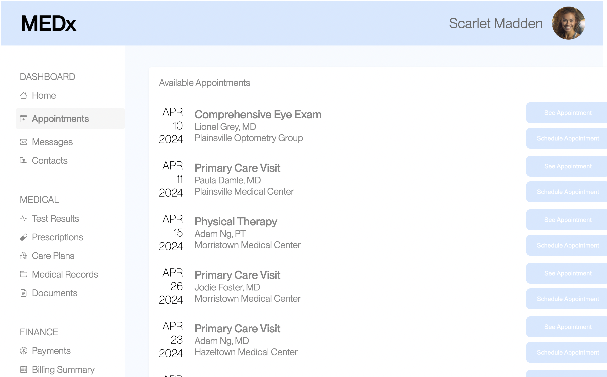
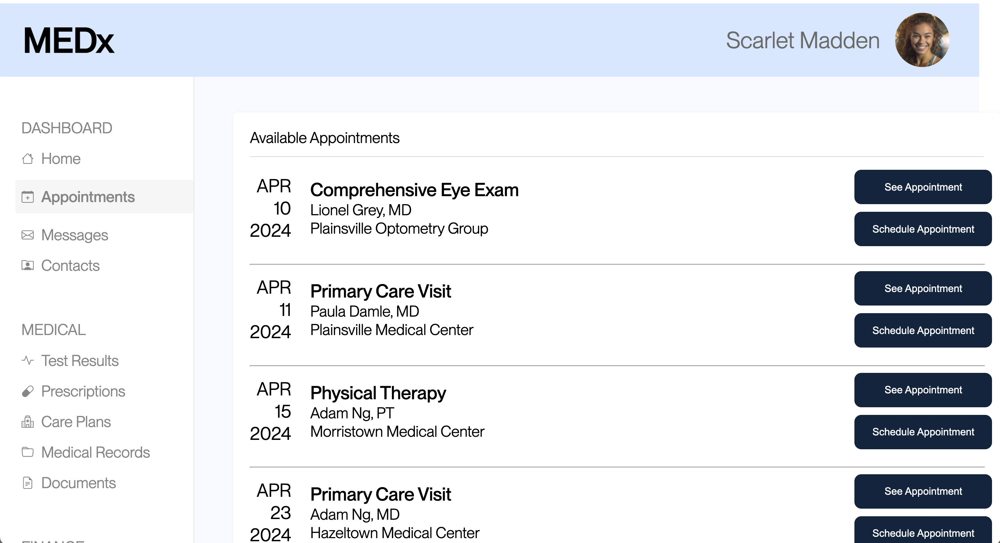
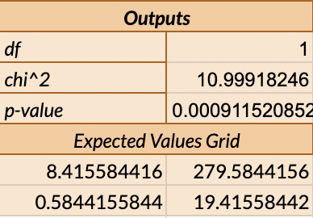
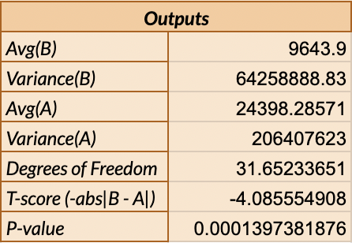
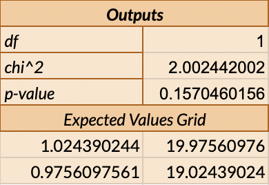

This project focused on using statistical techniques and A/B testing to form confident conclusions about how two different designs affect user interaction. I used two versions of the same site, one of which was the original, and one which I improved upon. My goal was to use statistical analysis to determine if my changes quantitatively did improve the site using various user measurements.
Process and Changes
We were given this simple site to update, and the goal of booking an
appointment for a certain date, practitioner, and location. I chose to
update the colors to make words more legible, make the font weight of
dates larger, and switch the information order so the practitioner was
the heading instead of the appointment type. I also sorted by date and
added lines between each appointment section to create a more obvious
distinction.


We then ran an A/B test with classmates as test participants. We first
all performed the version A target interaction on a TA’s machine, then
performed the Version B target interaction on everyone else’s
computers. Though not representative of a true A/B test due to
repeated interactions rather than just a single A or B target
interaction, it suffices for our understanding here. Using this data,
we can move into hypothesis testing and statistical testing.
Statistical Tests
I conducted statistical tests for the misclick rate, time on page, and success rate for Version A and Version B. In addition, there were various summary statistics that offer insight into each measured value.
Misclick Rate
This was defined as the frequency with which users click something
else on the page before finding the correct button for the task.
- Null hypothesis: There will be no difference between misclick rates for version A and version B.
- Alternative hypothesis: The misclick rate for version A will be different than the misclick rate for version B.
I chose to use a chi squared test, since we're measuring differences in frequency across two groups, and the values aren't continuous but instead boolean true/false values that we can sum up for each group. This gives us 6 misclicks and 15 non-misclicks for Sample A, and 3 misclicks and 17 non-misclicks for Sample B. The chi squared test technically measures difference between two groups, but from the data it is apparent that any difference between the two will represent a lower misclick rate for Sample B, as there are both less misclicks and more non-misclicks than in Sample A.

After running the chi^2 test, we are given the table above. The most important value here is the p value. Our p value suggests having approximately a .09% chance that there is no difference between the groups, which is far below the normal threshold of 5%. From this, we can reject the null hypothesis. This means that we find statistically significant evidence that the alternative hypothesis is true, or that the misclick rate for version A is different than version B. In conjuction with our general data summary, which shows that any difference will be in the direction of a lower misclick rate for Sample B, we can be confident that the improvements in sample B led to a lesser rate of misclicking compared to Sample A.
Time on Page
This was defined as the time spent on the webpage for each user group.
- Null hypothesis: There will be no difference between time on page for version A and version B.
- Alternative hypothesis: The time on page for version A will be higher than the time on page for version B.
I chose to use a single-tailed t-test, since time is a continuous variable. Additionally, our aim is to show a positive change from Sample B to Sample A, as opposed to just a directionless distinction, which is better represented by a single-tailed t-test rather than a double-tailed t-test.

From first glance, we can show an immediate distinction between the average values for Sample A and Sample B, with Sample B clearly lower. In order to prove this is a significant difference, we can look at the p-value. In comparison to the threshold alpha of 0.05, the p-value is far lower, and indicates a .01% chance that the time on page for Sample B is not higher than Sample A. As a result, we can reject the null hypothesis and accept our alternative hypothesis, saying with confidence that Sample A has more time spent on the page than Sample B. As a result, our improvements have led to a statistically significant decrease in the time spent to complete a task for Sample B compared to A.
Success Rate
This was defined as frequency with which users were able to complete the given task.
- Null hypothesis: There will be no difference between success rates for version A and version B.
- Alternative hypothesis: The success rate for version A will be different than the success rate for version B.
I chose to use a chi squared test since we're measuring differences in frequency across two groups, and the values aren't continuous but instead boolean true/false values that we can sum up for each group. This gives us 2 failures and 19 successes for Sample A, and 0 failures and 20 successes for Sample B. The chi squared test technically measures difference between two groups, but from the data it is apparent that any difference between the two will represent a lower failure rate for Sample B, as there are both less failures and more successes than in Sample A.

Unlike in the two tests above, the p-value is higher than the alpha value of 0.05, so I fail to reject the null hypothesis. This doesn't mean that there's no difference between the two, as our aggregated sums do show that users were less likely to fail in Sample B. Instead, that means this data only shows a distinction with 85% certainty, which is not statistically significant enough to conclude with confidence that Sample B success rates are higher than Sample A.
Conclusions and Reflections
Overall, this project offered insight into the statistical models behind web design and A/B testing. Instead of relying solely on qualitative judgement to justify changes in a site, I now can utilize quantifiable methods to show change and improvement in user metrics between two versions of a site. With this newfound skillset, I am more prepared to navigate the iteration, prototyping, and testing process with confidence and surety.